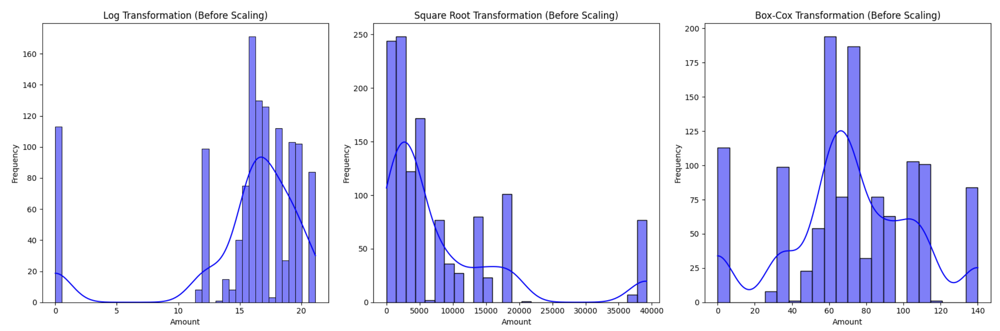
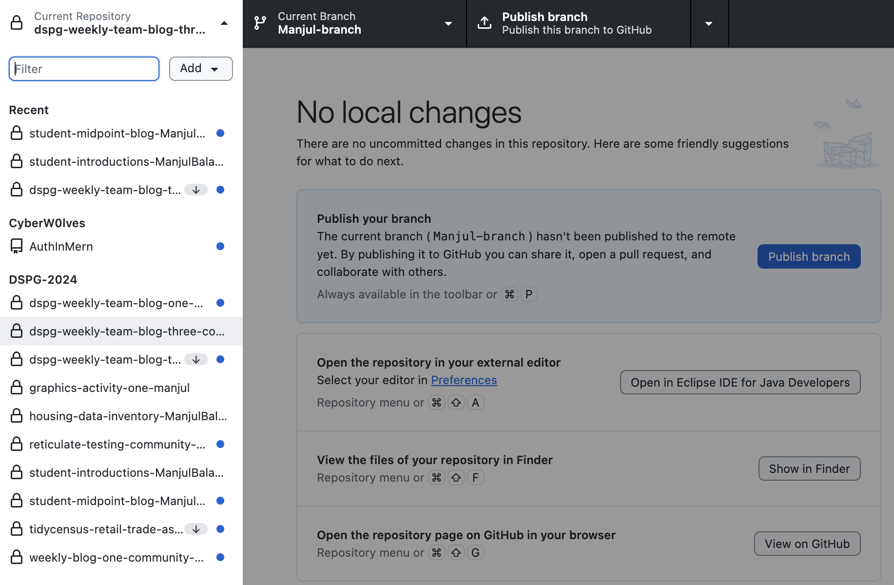

# Ensure there are no zero or negative values for transformations that require positivity
shift = 1 - new_merged['total_amount'].min()
# Applying transformations
new_merged['log_total_amount'] = np.log(new_merged['total_amount'] + shift)
new_merged['sqrt_total_amount'] = np.sqrt(new_merged['total_amount'])
_, best_lambda = boxcox(new_merged['total_amount'] + shift)
new_merged['boxcox_total_amount'] = boxcox1p(new_merged['total_amount'], best_lambda)
# Scaling transformations
scaler = MinMaxScaler()
new_merged['log_event_magnitude'] = scaler.fit_transform(new_merged[['log_total_amount']])
new_merged['sqrt_event_magnitude'] = scaler.fit_transform(new_merged[['sqrt_total_amount']])
new_merged['boxcox_event_magnitude'] = scaler.fit_transform(new_merged[['boxcox_total_amount']])
# Formatting scaled values
for col in ['log_event_magnitude', 'sqrt_event_magnitude', 'boxcox_event_magnitude']:
new_merged[col] = new_merged[col].apply(lambda x: "{:.2f}".format(x))Manjul’s Midpoint Reflection
Midpoint Reflection
Throughout this program, by having the opportunity to participate in different activities while simultaneously also working on our project specific work, I have been able to to improve and learn new a variety of new skills. This blog focuses of the skills I have improved on and skills I hope to get better at in the future.
Skills I have improved on
Python
As a software engineering student, we don’t use Python in our courses so I’ve had to learn Python myself and haven’t had the opportunity to grow my skills in this language through my classes. Past few weeks I’ve been using Python a lot for data pre-processing and visualizations.
Data Pre-processing & Visualization w/Python
I have utilized Python libraries such as Pandas, Numpy, Scipy, Sklearn, Matplotlib, Seaborn etc, for my data pre-processing and visualization tasks. I have done some relational database using MySQL but never with Python, so it was interesting to merge and join dataframes in Python.

GitHub
I have worked with Git before for my project based courses, but it has some time since I have used GitHub with multiple people, merging, resolving conflicts, creating pull requests, etc. I’ve been forgetting some git terminal commands but GitHub Desktop just makes life so easy, thanks Harun for putting me on!
Look at all those repos!

Skills that are new to me:
Along with refreshing on past skills, I have also had the opportunity to learn new skills and concepts.
R and it’s libraries
Although I’ve used mostly Python for handling datasets, but I plan to use R for my visualizations. I have to admit, it’s better for visualizations. I’ve taken multiple DataCamp courses as well for R which focused on R visualizations so they’ve been quite helpful. The activities where we learned about Census data, using ‘tidycensus’ and other R libraries(ggplot, leaflet, tigris, mapview, dplyr, etc…) have been beneficial to our project specific work as well. We have worked with ACS and other government data since then and those experiences we gained from those activities were helpful.
Here is a interactive map using leaflet and tigris which shows the economic connectedness of a county in Iowa.
Quarto Web App
I think Quarto is really unique and pretty cool. I was skeptical at first but it’s a great system to create blogs have showcase your work you’ve done so far and it allows multiple languages to be used in the same page. Sometimes it’s a pain to make everything work but it’s unique and helpful especially when you have a group that uses different languages and libraries.
Project specific: Community Capitals & Events Database
For our project we are focusing on two different projects, but they are correlated and the end goal is to showcase both of them in our final website. Past few weeks, I’ve had the opportunity to understand what each of the community capitals are, finding ways to measure each capital, finding reliable data sources for them, and A LOT OF DATA-PREPROCESSING for both capitals and events project.
If I had to sum up what I’ve been doing so far, find data source if not given —> extract raw data —> clean and reshape raw data into something useful but also make sure it’s format align with our other dataset so we can use it later for our final visualization website…
Skills I hope to improve
Data visualization in R
So far I’ve mostly worked with the making usable datasets and haven’t tapped into much data visualization and exploratory aspects. This is something we will be doing a lot in the next few weeks so it’s a skill I hope to become proficient in.
Playing around with raw datasets, cleaning, reshaping, etc
Although I have been doing this, there are still many things I have to learn. I often rely a lot on my projects leader and graduate fellow for making decisions on the dataset, and I also tend to rely on ChatGPT. Therefore, I hope to independent and grow my skills in a important aspect of Data Science.
Machine Learning Techniques
I’m not sure how much ML techniques we will be applying in the future for our projects, but since it’s a field of interest for me, I hope to gain more experience in this field. I’ve applied few ML techniques like scaling features with MinMaxScaler before in our project specific work, they’re very helpful and have many powerful libraries that could be beneficial. Although we may not build large language models or powerful CV models, I hope we apply some fundamental techniques in the future.
Here’s some code chunk of using feature transformation and scaling techniques in our of our datasets:
From our first week at Durham to now, a month went by really quick and it’s hard to believe we are already halfway. But my time here so far has been very insightful and I am excited to see what experiences I will continue to gain during the second half!